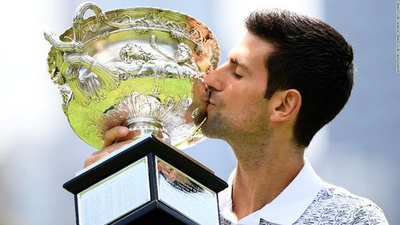

Novak Djokovic after winning the Australian Open
Timeline of Achievements by Novak Djokovic:
- 2008: Djokovic defeated Davydenko to win his first Tennis Masters Cup title.
- 2009: Djokovic ended the year as the No. 3 for the third consecutive year, having played 97 matches, with a 78–19 win-loss record.
- 2010:Djokovic was awarded the title "Serbian Sportsman of the year" by the Olympic Committee of Serbia and "Serbian Athlete of the year" by DSL Sport.
- 2011:Djokovic finished the season with a 70–6 record and a year-end ranking of No. 1.
- 2012:Djokovic was named the 2012 ITF World Champion in men's singles by the International Tennis Federation.
- 2013:Djokovic won his 16 Masters 1000 title in Paris at the end of the season, beating David Ferrer in the final.
- 2014:Djokovic was awarded the World Tour Finals trophy after Federer withdrew before the finals. This marked the 7th title of the season for him and the 4th title at the World Tour Finals.
- 2015:Djokovic beat Federer in straight sets winning his fifth World Tour Finals title and he became the first player to win four consecutive end-of-year finals tournaments.
- 2016:However, a runner-up finish at the World Tour Finals indicated his best performances in nearly three months. After the season, he parted ways with his coach of three years, Boris Becker.
- 2017:Djokovic announced that he would miss the 2017 US Open and the rest of the 2017 season to fully recover from his elbow injury.
- 2018:At the Mubadala World Tennis Championship, he scored victories over Karen Khachanov & Kevin Anderson to win the title. He ended the year with 9,045 points.
- 2019:At Wimbledon, he won his sixteenth Grand Slam, defending his title to win the tournament for a fifth time by defeating Roger Federer in an epic five set final that lasted four hours and fifty seven minutes, the longest in Wimbledon history.
- 2020:Djokovic's 8th win at the Australian Open made him the first Open Era male player to win Grand Slam titles in three different decades.
To know more about Novak Djokovic
Click Here!